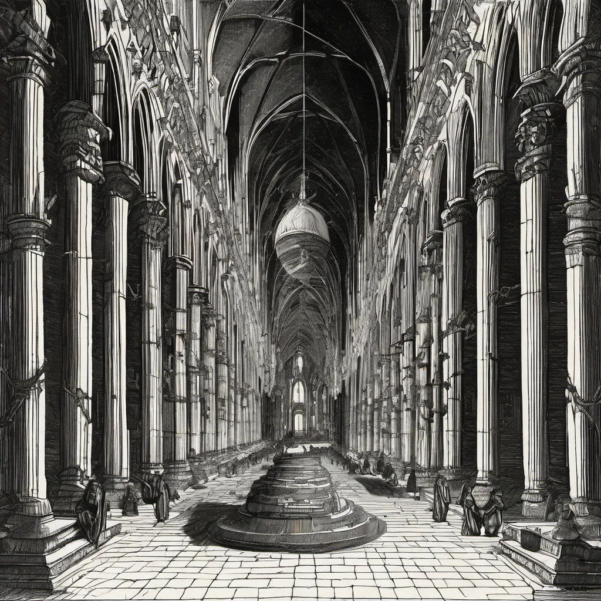

Memory Storage of a Modern System ·
votive candles in a row, resonance and harmonic overtones
votive candles in a row x resonance and harmonic overtones
Votive candles stand in silent rows, Their flicker caught by draughts of night. Each flame but stilled within its glow, A testament to spirits' flight.
Through walls, a sound now faintly moves, A vibration's whisper, low and deep. It builds, expanding from its grooves, In harmony, the nodal crests and heaves.
The candles lean as if to hear, Their quiet eyes aglow with light. Resonance in air so cool and near, Draws forth a voice that's not just right.
These wicks in rows, their wax now spent, Tell tales of magic once believed. Yet here, the physics does ascend, In nodes and peaks, an answer bequeathed.
How this piece was made
- 01Poem written byQwen2.5 7B recorded
Local model on one RTX 3070 Ti. It also critiques its own drafts and rewrites up to five times.
- 02Image prompt written byQwen2.5 7B from pipeline history
Local model. It reads the poem and writes the picture brief.
- 03Image rendered byStable Diffusion XL 1.0 from pipeline history
Local diffusion model on the same GPU. Several candidates per poem.
- 04Image chosen byClaude Opus from pipeline history
Claude, running as the corporation's blind art-critic. It scores every candidate and never writes a prompt.
- Poem drafts
- 5 of 5
- Poem self-score
- 6/10
- Image candidates
- 4
- Judge’s score
- 4/10
- Selection
- Highest-scoring on-subject candidate (did not clear the judge’s bar outright)